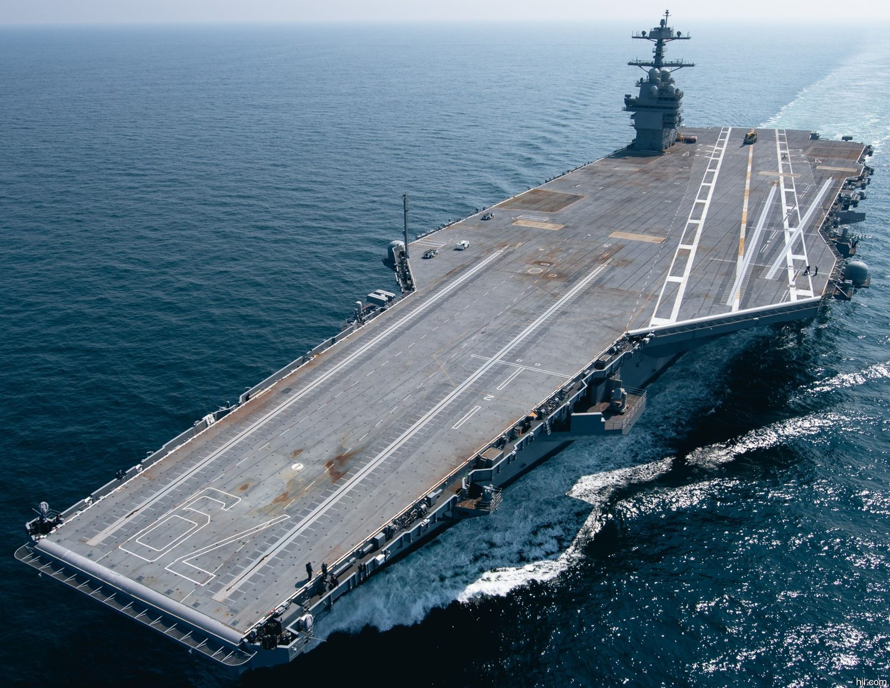
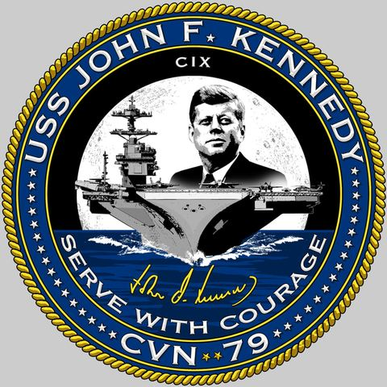
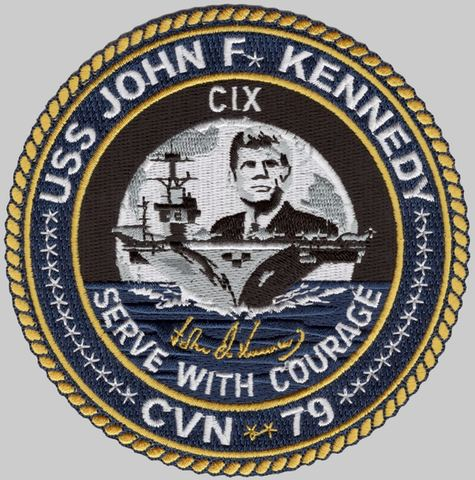
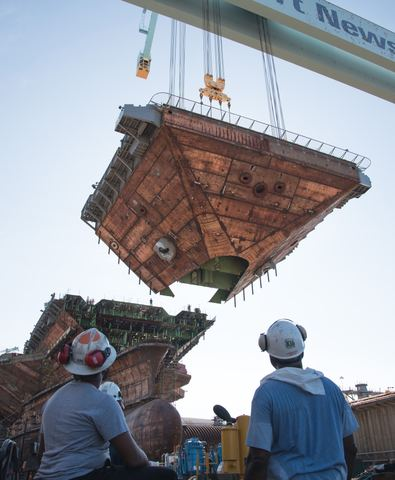
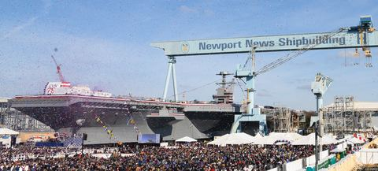
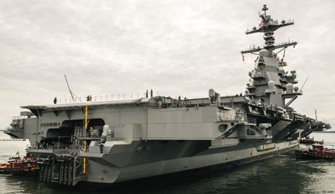
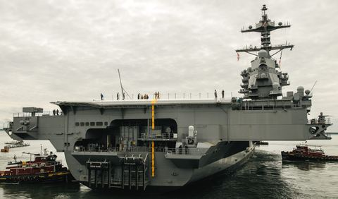

The ship
USS John F. Kennedy · CVN-79
Second ship of the Gerald R. Ford class (CVN 78). Built at HII Newport News Shipbuilding, the only US shipyard able to build large-deck nuclear carriers. Preliminary acceptance 29 September 2026, delivery planned March 2027.

Identity
- Hull
- CVN-79
- Pre-delivery
- PCU John F. Kennedy
- Class
- Gerald R. Ford class (CVN 78)
- ACAT
- IC
- Program office
- PEO Aircraft Carriers
- Builder
- HII Newport News Shipbuilding
- CAGE
- 43689
- District
- VA-03
- Sponsor
- Caroline Kennedy
- Motto
- Serve with courage
- Service life
- 50 years


Delivery
March 2027
141 months award to delivery, 193 months construction start to delivery
Completion of fitting out
July 2027
The clock that sets the OWLD
Obligation Work Limit Date
June 2028
CFO plus eleven months, confirming OPNAVINST 4700.8M and refuting the NAVSEA desk reference reading
Delay against the procurement-year plan
54 mo
Four and a half years
Program spine
35 dated events, each with its source. Timestamps matter more than values: the same ship has a different cost at every timestamp.
2004-05
Construction Preparation contract awarded (CVN 21 era)
FY2027 MSAR
2007
First CVN-79-specific advance procurement increment, $52.750M
PB2027 P-5c
2008-08
USD(AT&L) DAB authorizes CVN-79 construction preparation phase
FY2022 SAR
2009-01-15
Construction Preparation contract N00024-09-C-2116 awarded, $111,803,875 base
USAspending; FY2023 MSAR
2011-05-29
Named John F. Kennedy by SECNAV Ray Mabus
CRS RS20643
2013-03
Construction Preparation contract extended through FY2013
FY2023 MSAR
2013
Procurement year. Authorization moved FY2012 to FY2013. Procurement year carried only 3.7% of the ship
CRS RS20643; PB2027 P-5c
2015-06-05
Detail Design & Construction contract N00024-15-C-2114 awarded, $3,352,611,760 FPIF target
HII release
2015-08-22
Keel laid
Naval Vessel Register
2017-06
50% structurally erected, 224 of 447 erectables landed
FY2023 MSAR
2018-04
75% structurally erected, 341 of 447 erectables landed
FY2023 MSAR
2019-10-01
Crew activated as Pre-Commissioning Unit
seaforces
2019-10-29
Dry dock flooded, ship launched
NavSource
2019-12-07
Christened by Caroline Kennedy
NavSource
2019-12-20
FY2020 NDAA Sec. 124 mandates F-35C capability before PSA completion
CRS RS20643
2020-11
NTE $284,285,022 FPIF mod for single-phase delivery and JSF work
HigherGov
2021-08
Navy raises cost baseline $1.3B to ~$12.7B, primarily contract overruns. Ship over 88% complete
GAO via CRS RS20643
2023-06-23
$393.3M in mods shift PSA work into baseline construction. Delivery reset to 31 Jul 2025
HII release
2023-08
SECNAV notifies Congress of Cost Limitation Baseline rise to $12.936B
FY2023 MSAR
2023-12
Ship 91% complete. DD&C contract 81.3% complete by dollars
FY2023 MSAR
2024-09
Faulty welds disclosed at NNS, referred to DOJ. HASC opens investigation. 26 ships affected
USNI; Military.com
2025-04-08
PEO Carriers tells SASC Seapower the ship is 95% complete
USNI; Inside Defense
2025-07
FY2026 books move delivery from July 2025 to March 2027
CRS RS20643
2025-11-21
Four-part mod across both contracts, $142.9M, including FMS Canada and USMC RDT&E
DoW announcement
2026-01-28
Builder's trials begin, first time underway
USNI
2026-02-04
Returns from builder's trials, eight days at sea
Stars and Stripes
2026-03-14
Navy extends USS Nimitz ten months to hold the 11-carrier floor
Stars and Stripes
2026-04-21
FY2027 PB raises Total Ship Estimate to $13,409.970M, +$213.970M
PB2027 SCN Book P-5c
2026-07-02
GAO-26-108457 reports program unit costs up 3%, about $480M in one year
GAO-26-108457
2026-08-12
Acceptance trials, four days underway
HII
2026-09-29
Preliminary acceptance. Ship departs NNS for Naval Station Norfolk
HII release; USNI
2026-10-13
First F-35C launch and arrested recovery on a Ford-class ship
Naval News
2027-03
Delivery and commissioning planned. 141 months award to delivery
PB2027 SCN Book P-21
2027-07
Completion of Fitting Out planned
PB2027 SCN Book P-21
2028-06
Obligation Work Limit Date. CFO plus 11 months, confirming OPNAVINST 4700.8M
PB2027 SCN Book P-21
Source ring0/RING0_CVN79.md Part A. Every row carries a primary or secondary citation.
Construction record
Click to enlarge.






